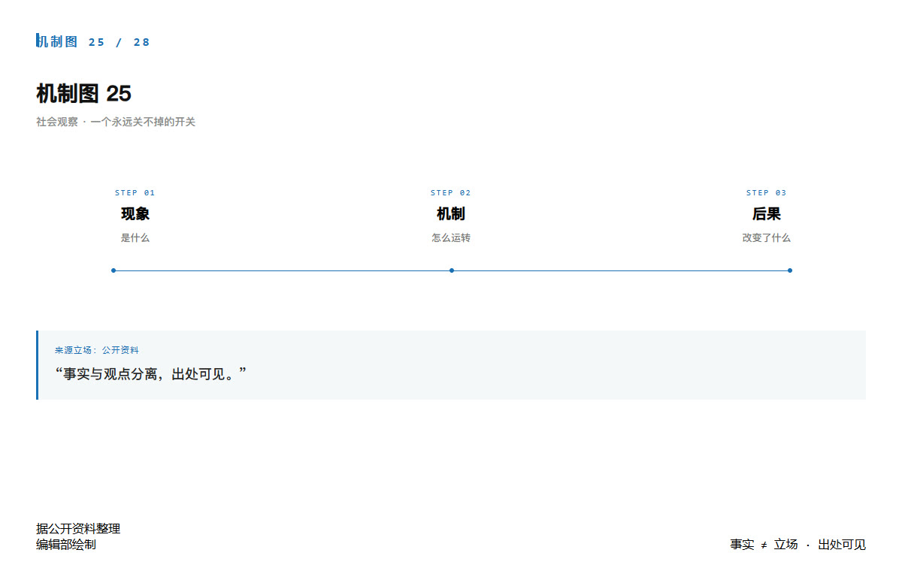

你回应，就是狡辩的证据
社会观察 · 一个永远关不掉的开关
你说「我没有」。对方要证据。你翻出记录，对方说你早有准备；你急了，对方说你看，心虚了；你不说话，对方说默认了。三条路走完，你发现自己一条都没走过。
下面几句话都是网上常见的追问，出处不可考，这里只当语言标本。任何性别的人都可能说，也可能被说中。看的是句子怎么把人锁住，不是谁在说它。
你以为把话说清楚就好了。可这个陷阱没有「说清楚」这个出口——它的设计就是让你永远差一步。你不是在答辩，是在给一台机器添料。
它的标准形态是：要求一方为「未发生的事」或「态度问题」提供无限证明。「你说你没做过，证据呢？」「你这么激动，是不是心虚？」「身正不怕影子斜，你怕什么？」
注意这三句的逻辑闭合：不激动等于默认，激动等于心虚，自证永远不够。三个出口全被堵上，剩下的是一个闭环。你无论往哪边走，都在往陷阱里添砖。
它比「抛开事实不谈」更狠一点：那一句换掉了讨论的前提，这一句直接取消了你作为回答者的资格。你说什么，都先被当成心虚的证据。
陷阱最难的地方，是任何回应都在给它添砖。你解释，被说成「还在狡辩」；你补充证据，被说成「早就准备好了」；你沉默，被说成「默认了」。回应和不回应，都被计入同一个账本。
这不是辩论，是一个没有出口的房间。辩论的前提是双方承认同一套规则；这里没有，规则每时每刻都在被重写。你以为在答辩，其实在被计分。
而计分的人不需要证明什么。他只需要不断提问，提问的成本接近于零，回答的成本却高得离谱。这个不对称，才是陷阱真正的动力。
📌 一个走不出去的圈
不回应等于默认，回应等于心虚，自证永远不够。开关不在你手里：你做的每件事，都会被算成它成立的证据。
在互动定价的系统里，陷阱还有加成。设陷阱的句子短、情绪密度高、容易复读，天然高互动；拆陷阱的句子长、要讲逻辑、要下定义，天然低互动。语言上的攻防成本不对称，被放大成了可见度的不对称。
讲道理的人面对的不是一个具体的人，是一套计价系统。他就算答赢了这一句，传播上还是输——因为拆陷阱的内容没人转发，设陷阱的句子满屏都是。
照样补一句对称的话：这套追问在别的年代，也曾被用来压制女性、压制弱者。它是可以换主人的工具，谁拿到叙事先发优势，谁就能把它拧到自己这边。
网络公共语料（语言标本）
「你说你没做过，证据呢？你这么激动，是不是心虚？身正不怕影子斜，你怕什么？」
三句常见的追问，出处不可考，作语言标本引用。句式结构是观察对象，不指向具体的人和群体。

▲ 自证陷阱的三重封闭（编辑部绘制）
出口不是教人怎么赢这场对话。那会变成行动指南，而且根本赢不了——规则的制定权不在回答者手里。能谈的是把举证责任写进讨论规则：谁提出主张，谁出示依据。
做不到全平台，至少在具体的社群和话题里可以试。当「请拿出依据」成为对提问者的要求，而不只是对回答者的要求，那个开关才第一次落回地面。
✍️ 你有没有过怎么解释都被说成狡辩的时候？
最后你是继续说，还是不说了？评论区说说。觉得有用，点个赞、点个「在看」。
下一篇：讲道理的人算完账，开始不说话了。
参考
「你说你没做过，证据呢？」「你这么激动，是不是心虚？」「身正不怕影子斜」，据公共语料观察，出处不可考，作语言标本分析。
「自证陷阱」「无限自证义务」为对话术结构的分析性归纳，非心理学或法学既有术语；制度层面的举证责任以法律为准。
社会观察，不站任何性别立场。话术结构是分析对象，使用话术的群体不是；不指控任何性别「制造了」这些句式。事实据公开来源，未证实指控不转述、不评价。拆解机制是为了理解，不是行动指南。